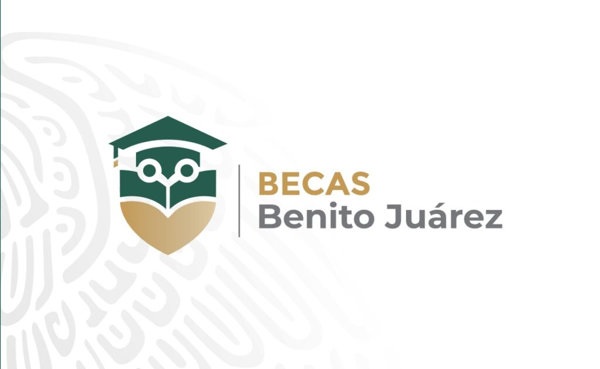

Beca Benito Juárez Educación Superior
$2,575 MXN bimestrales
Apoyo económico federal para estudiantes de licenciatura en instituciones públicas.
Requisitos principales:
- Estar inscrito en universidad pública
- No contar con otra beca económica federal
- Pertener a familia de bajos recursos
- Contar con CURP y identificación oficial
Fecha estimada de registro: Agosto 2025